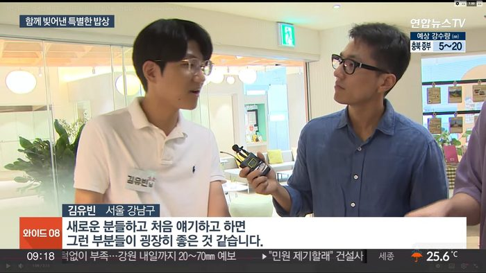

Curriculum Vitae — 경력
김유빈 경력 — KIM
YUBIN
김유빈 — 데이터로 판단의 근거를 만들고, AI로 실행의 속도를 만듭니다.
법무법인 경국에서 전략 컨설팅과 AI 프로세스 혁신을 담당합니다. 흩어진 데이터를 모아 무엇을 먼저 할지 정하고, 그 결정을 자동화와 콘텐츠로 실행에 옮깁니다. 실무에서 만든 시스템은 강의 모듈로도 옮기고 있습니다.
01 — Practice Areas
업무 영역
전략 컨설팅 & 사업성 검토
흩어진 시장·업무 데이터를 모아 무엇을 먼저 할지 정합니다. 정비사업 용역비를 자동 수집해 시장 단가 비교와 사업성 검토의 기준선을 만들었습니다.
AI 프로세스 혁신
송무·사무 워크플로우를 진단하고, AI 자동화로 다시 설계합니다. 고객 메일 자동 분류 시스템과 급여명세서 자동 발송으로 검증했습니다.
마케팅 컨설팅 & 브랜드 필름
Veo 3 기반 시네마틱 필름과 데이터 드리븐 캠페인을 설계합니다. 르엘 성수·루이비통 캠페인 필름으로 문법을 증명했습니다.
데이터 인프라 & 대시보드
공공데이터와 업무 데이터를 의사결정 가능한 화면으로 번역합니다. 청약 인사이트 대시보드를 직접 구축·배포했습니다.
02 — The Composite
융합 역량
전략은 무엇을 먼저 할지 정하는 일이고, AI는 그 결정을 빨리 실행하는 도구입니다. 여섯 도메인이 하나의 판단력으로 수렴합니다.
The Arsenal — 실무 도구
03 — Experience & Education
경력 및 교육
성평등가족부 제2차 청년세대 성별균형 공개형 공론장 〈모두의 성평등〉 참석
‘청년이 생각하는 성평등정책, 어디까지?’를 주제로 연세대 백양누리 그랜드볼룸에서 열린 공개형 공론장(2026. 10. 25)에 참석해 성평등가족부 장관과 함께함. 현장 사진
2026 민주청년지도자 양성과정 입학 · 수강 중
민주연구원 주최·주관 2026 민주청년지도자 양성과정에 입학(2026. 10. 24)해 12월 13일까지 정책·리더십 과정 수강 중. 입학식에서 김민석 당대표·강득구 민주연구원장과 함께했고, 이광재 예산결산특별위원장의 특강에서 직접 질문했으며, 박홍근 기획예산처 장관과도 현장에서 함께함. 입학식 현장
한경 집코노미 박람회 2026 — KREMA AI 전시관 서비스 시연·발표
코엑스 D홀 KREMA AI 전시관 C-10 부스(2026. 9. 30)에서 직접 설계·구현한 집캐치와 3D 감정평가 필드워크를 소개하고, 제작 배경과 작동 방식을 설명하며 관람객 질문에 답했습니다.
명지대학교 AI 데이터 매니지먼트 과정 — 트랙3 수료 · 트랙1·2·4 수강
AI 데이터 매니지먼트 과정 네 개 트랙 중 트랙3을 수료했고, 트랙1·2·4를 수강 중이거나 수강할 예정입니다.
국민통합위원회 2026 국민 대토론회 — 정책 제안 발표
〈2026 세대·젠더 분야 현장형 국민대화 국민 대토론회〉(2026. 9. 29 · aT센터) 자산 분야 트랙에서 청년 미래배당펀드팀으로 ‘청년 초과세수 미래배당펀드’를 제안·발표. 일회성으로 소진되는 초과세수를 청년 세대가 함께 불리는 자산으로 전환하는 구조를 설계.
청와대 대통령 주관 청년의날 행사 참석
대통령이 주관한 청년의날 기념행사에 청년 대표로 초청되어 참석. 청년 정책의 방향과 현장의 과제를 국정 최고 의사결정 단위에서 직접 청취하고 교류.
공개 기록 — (사)한국부동산마케팅협회 회원사소식, 2026. 9. 21
서초구 가치디자인단 위촉
서초구청 위촉식(2026. 9. 18)을 거쳐 가치디자인단으로 위촉되어 구정 현장 활동에 참여하고 있습니다.
제9기 서초청년네트워크 부위원장 위촉
서울특별시 서초구 주최 제9기 서초청년네트워크 발대식(2026. 9. 9)에서 부위원장으로 위촉(임기 2026. 9. 9 ~ 2027. 6. 30). 서초구 청년 정책 거버넌스에서 의제 발굴과 위원회 운영에 참여.
공개 기록 — (사)한국부동산마케팅협회 회원사소식, 2026. 9. 10
국민권익위원회 청년정책 패널 활동
국민권익위원회 청년정책 패널로 활동하며, 청년의 시각에서 정책 과제에 의견을 내고 있습니다.
국무조정실 온라인 청년참여단 활동
국무조정실 온라인 청년참여단으로서 청년 정책 과제에 대한 의견 수렴과 정책 제안에 참여하며, 온라인 공론장을 통해 청년 세대의 목소리를 정부 정책 과정에 전달.
서울특별시 핀테크 아카데미 14기 수강 중
금융과 기술이 접합하는 지점에서 핀테크 산업 구조와 디지털 금융 서비스 설계 원리를 학습하고 있습니다(2026. 8 개강).
‘클로드 코드로 완성하는 상담 RAG 챗봇’ 교육 이수
Claude Code로 문서 검색 기반(RAG) 상담 챗봇을 직접 구현하는 실습 교육(2026. 7. 25).
건국대학교 스마트건설기술교육 프로그램 이수
BIM 설계 데이터 해석과 드론 측량, 건설 자동화 워크플로우를 실습 중심으로 다루며 부동산·건설 도메인을 데이터의 언어로 읽어내는 융합적 관점을 정립.
서울시민기자단 & 서울청년파트너스 위원 활동
공공 레벨의 미디어 에디팅과 거시적 시정(市政) 트렌드 분석, 트렌디한 정책 제안 프로세스를 주도.
서울광역청년센터 나눔서포터즈 · CJ제일제당 나눔냉장고 운영
CJ제일제당과 서울광역청년센터가 연계한 나눔냉장고 프로그램에서 월간 식품 나눔·제로웨이스트 캠페인을 현장 운영하며, 청년의 가치소비 실천과 자기주도적 식습관 형성을 지원하는 사회공헌 활동을 수행.
한국부동산마케팅협회 (KREMA) AI 활용 마케팅 기획자 양성 과정 4기 수료
AI 기반 부동산 시장 데이터 분석과 타겟 세그먼트 도출, 매체별 디지털 마케팅 전략 수립 및 자동화 솔루션 설계 역량을 체화.
서울대학교 AI 교육 전문가 과정 (AIED) 4기 수료
인공지능 메커니즘의 비즈니스 도메인 최적화 적용, 구조화된 프롬프트 엔지니어링 아키텍처의 이해와 교수법 체화.
한국부동산마케팅협회 (KREMA) — 인턴 (2026. 4 ~ 2026. 6)
한국부동산마케팅협회 인턴으로 근무했습니다(2026. 4 ~ 2026. 6).
삼성청년SW아카데미 (SSAFY) 13기 이수
최신 소프트웨어 아키텍처와 하이테크 AI 융합 알고리즘 실무 프로젝트로 엔지니어링 역량을 내재화.
육군창업경진대회 · 강원열린군대 창업프로그램 2군단장상 수상
HVAC 기술 기반 리스크 관리 혁신 아이디어 제안 및 구조화된 비즈니스 모델(BM) 유효성의 공식 검증. 상장 원본 보기 →
대구광역시교육청 · 독일 Vattenfall 해외 연수
유럽 선진 기업의 인프라 시스템과 글로벌 비즈니스 스탠다드를 조기에 체득한 글로벌 역량의 시초.
04 — Lectures & Workshops
강의 역량
만들어 본 사람만 가르칠 수 있는 것이 있습니다. SSAFY 13기의 엔지니어링 훈련, 서울대 AIED 4기의 프롬프트 아키텍처와 교수법, KREMA 4기의 시장 데이터 전략을 실제로 만들어 운영한 뒤 강의 모듈로 옮겼습니다. AI 두 트랙과 부동산·자산관리 한 트랙, 열두 과정이며, 조직 상황에 맞춰 시간과 실습 비중을 조정합니다.
Track A — AI 파운데이션
도구를 쓰는 사람에서, 도구를 설계하는 사람으로.
AI 기초 개념 — 무엇이 되고 무엇이 안 되는가
토큰·맥락창·환각이 생기는 자리, 생성형 AI가 잘하는 일과 못하는 일의 경계, 업무에 붙일 때의 검수 기준. 대상은 전 직군 입문자와 도입을 검토하는 관리자이며, 서울대 AI 교육 전문가 과정(AIED) 4기를 근거로 합니다.
프롬프트 엔지니어링 — 문장이 아니라 구조로
역할·제약·예시·출력형식의 네 기둥, 재사용 가능한 템플릿 설계, 평가와 개선 루프. 대상은 전략·마케팅·사무 실무자이며 서울대 AIED 4기의 구조화된 프롬프트 아키텍처를 근거로 합니다.
바이브 코딩 — 코드를 몰라도 만들고 배포하기
요구사항을 AI가 이해하는 단위로 쪼개기, 고쳐가며 만드는 반복 루프와 검증, Vercel 배포와 운영 감각. 대상은 비개발 직군과 사내 도구를 직접 만들려는 실무자이며 SSAFY 13기의 소프트웨어 아키텍처 실무 프로젝트를 근거로 합니다.
하네스 엔지니어링 — 에이전트에 손과 발을 달기
도구 연결과 권한 경계 설계, 맥락 주입과 실패 시 폴백 설계, 사람이 승인해야 할 지점 정하기. 대상은 사내 자동화를 설계하는 실무자이며 GWS·NAVER WORKS API 연동과 크롤링 파이프라인 구축 경험을 근거로 합니다.
Track B — 도메인 적용
직접 설계·배포해 운영 중인 시스템에서 나온 네 과정.
실무자를 위한 전략 컨설팅 AI
업무 흐름 진단과 병목 찾기, 자동화 우선순위 매트릭스, 사람이 남아야 할 판단의 자리. 대상은 백오피스·전략·전문직 사무소 실무자이며 고객 메일 자동 분류 시스템을 사례로 다룹니다.
공공데이터로 시장을 읽는 법
공공데이터 API 수집 설계, 나란히 놓아야 의미가 생기는 지표, 배포와 갱신 자동화. 대상은 부동산·마케팅·정비사업 데이터 담당자이며 KREMA 4기의 시장 데이터 분석과 청약 인사이트 대시보드를 근거로 합니다.
생성형 AI 브랜드 필름 제작
영상 프롬프트 아키텍처, 영상·내레이션·사운드 결합, 브랜드 톤 검수 기준. 대상은 마케팅·홍보·브랜드 담당자이며 르엘 성수와 루이비통 캠페인 필름을 사례로 다룹니다.
제도의 언어를 대중의 언어로
대상에 맞춘 메시지 재구성, 카드뉴스·영상 포맷 설계, 정책 제안으로 잇는 커뮤니케이션. 대상은 공공기관·청년 조직·협회이며 6·3 지방선거 카드뉴스를 사례로 다룹니다.
Track C — 부동산 · 자산관리
자산은 숫자로, 계약은 근거로. 분양대행자 자격·KREMA 4기·정비사업 데이터 자동화에서 나온 네 과정.
부동산 자산관리 입문 — 임대수익을 숫자로 읽기
가능총수익 → 공실·대손 → 유효총수익, 운영경비와 NOI — 이자·감가상각을 빼지 않는 이유, 환원율 1%p가 자산가치를 바꾸는 폭. 대상은 임대인 · 자산관리 입문자 · 중개·분양 실무자이며 근거는 감정평가사 필드워크 — 자산관리·리츠 직무 체험 설계입니다.
분양 마케팅과 광고 윤리 — 판매보다 신뢰
관찰과 주장 구분 — 입지·조망 문구 검수, 청약 가점·자격을 상담에서 다시 계산하는 법, 채널별 예산과 상담 전환 설계. 대상은 분양대행 · 시행사 마케팅 · 상담 실무자이며 근거는 분양대행자 자격 · KREMA 4기 부동산 마케팅 기획자 과정입니다.
전세·임대차 안전 점검 — 계약 전에 확인할 것
대항력과 우선변제권이 생기는 시점, 등기사항증명서 갑구·을구 읽기, 잔금일 위험과 특약 문구. 대상은 사회초년생 · 청년 임차인 · 중개 보조 실무자이며 근거는 법무법인 경국 송무 실무 · 필드워크 공인중개사 트랙 설계입니다.
개발·정비사업을 데이터로 읽기
용적률·건폐율로 사업 규모 잡기, 분양가·공사비 민감도 분석, 누리장터 용역 단가 수집과 비교. 대상은 시행 · 정비사업 조합 실무 · 부동산 전략 담당자이며 근거는 정비사업 용역비 자동 수집 프로그램 운영 · 건국대 스마트건설입니다.
무엇을 근거로 가르치는가
삼성청년SW아카데미 13기
소프트웨어 아키텍처와 AI 알고리즘을 실무 프로젝트로 학습했습니다. 공식 홍보 앰배서더로 지원자 대상 커뮤니케이션도 수행했습니다.
서울대학교 AIED 4기
AI 교육 전문가 과정에서 구조화된 프롬프트 아키텍처와 교수법을 체화했습니다.
한국부동산마케팅협회 4기
AI 기반 시장 데이터 분석과 세그먼트 도출, 매체별 디지털 마케팅 전략 수립을 익혔습니다.
배포된 결과물 8건
강의 사례는 전부 직접 만들어 운영 중인 산출물입니다. 시연 가능한 화면으로 수업합니다.
05 — Media
미디어

김유빈 · 강남1인가구센터 인터뷰 — 연합뉴스TV